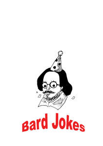

Trade Mark Journal No.2025/019 9 May 2025
UK00004181837 31 March 2025 (16,21,25)

- Class 16
- Mats of paper for beer glasses; Paper mats for beer glasses; Mats of paper for drinking glasses; Posters; Stickers; Decorative stickers for helmets; Birthday cards; Anniversary cards; Cards; Christmas cards; Gift cards; Occasion cards; Holiday cards; Greetings cards; Greeting cards; Invitation cards; Birthday books; Gift wrap cards; Musical greeting cards; Musical greetings cards; Pop-up greetings cards; Picture cards; Announcement cards [stationery]; Baseball cards; Post cards; Name cards; Trivia cards; Collectable cards; Printed cards; Dinner mats of card; Visiting cards; Place cards; Note cards; Index cards [stationery]; Business cards; Flash cards; Correspondence cards; Blank cards; Blank note cards; Table mats of card; Paper towels; Towels of paper; Calendars; Tear-off calendars; Advent calendars; Calendar desk pads; Printed calendars; Pocket calendars; Desk calendars; Wall calendars; Paper sheets [stationery]; Blank journal books; Printed paper labels; Face towels of paper; Paper face towels; Hand towels of paper; Paper hand towels; Napkin paper; Cloth paper; Table cloths of paper; Paper table cloths; Paper napkins; Napkins of paper; Postcards; Postcards and picture postcards; Picture postcards; Lenticular postcards; Postcard paper; Envelopes [stationery]; Stickers [stationery]; Printed cardboard invitations; Printed mail response cards; Printed booklets; Printed stationery; Printed flyers; Brochures; Printed invitations; Printed leaflets; Printed paper invitations; Booklets; Collages; Envelopes; Envelopes for stationery use; Stationery; Stickers [decalcomanias]; Paper envelopes for packaging; Paper stationery; Printed paper signs; Mounted posters; Poster books; Posters made of paper; Placards of paper; Prints; Art prints; Graphic prints and representations; Printed paper signs featuring names for use for special events; Bumper stickers; Adhesive stickers; Car stickers; Decorative stickers for cars; Vehicle bumper stickers; Sticker books; Decorative stickers for soles of shoes; Cardboard badges; Adhesive printed labels; Cardboard hangtags; Placards of cardboard; Adhesive labels of paper; Cardboard labels; Placards of paper or cardboard; Adhesive wall decorations of paper; Adhesive labels; Tapes (adhesive -) [stationery]; Floor decals; Paper badges; Labels of paper or cardboard; Printed luggage labels; Paper hangtags; Luggage tags of cardboard; Self-adhesive paper for notes; Labels of paper; Paper labels; Paper name badges; Notepads; Adhesive notepads; Canvas for painting; Painting canvas; Canvas prints; Canvas boards; Canvas panels for artists; Artists' canvas; Notebook paper; Notebooks; Jotters.
- Class 21
- Mugs; Cups and mugs; Coffee mugs; Ceramic mugs; Earthenware mugs; Porcelain mugs; Mugs of porcelain; Beer mugs; Glass mugs; China mugs; Mugs of china; Insulated mugs; Travel mugs; Mugs made of porcelain; Mugs made of earthenware; Drinking mugs made of porcelain; Mugs made of china; Vacuum mugs; Mugs made of plastic; Mug sleeves; Mugs made of ceramic materials; Mugs of precious metal; Drinkware; Teapots; Teacups (yunomi); Teacups [yunomi]; Coffee cups; Tankards; Coffee pots; Coasters (tableware); Porcelain coasters; Mugs made of fine bone china; Tea cups; Mugs, not of precious metal; Pint tankards; Coffee stirrers; Tumblers for use as drinking glasses; Carafes; Pewter tankards; Glass cups; Cups; Tumblers; Tea pots; Cups made of earthenware; Cups made of pottery; Demitasse sets comprised of cups and saucers; Goblets; Holders for tumblers; Glass carafes; Insulated bottles [flasks]; Glass pots; Beer steins; Glasses, drinking vessels and barware; Steins; Souvenir plates; Ceramic tableware; Pint glasses; Cups made of china; Pewter goblets; Coffee pots [non-electric]; Non-electric coffee pots; Beer jugs; Tumblers [drinking vessels]; Trivets [table utensils]; Tea canisters; Cardboard cups; Beer glasses; Drinking steins; Liqueur cups; Drinking cups; Plastic cups; Sippy cups; Beverage glassware; Glass flasks [containers]; Tableware of porcelain; Figurines of porcelain; Coffee services of ceramic; Compostable cups; Flasks; Glass flasks; Liqueur flasks; Hip flasks; Vacuum flasks; Drinking flasks; Insulated flasks; Flasks for travellers; Insulating flasks; Vacuum bottles [insulated flasks]; Vacuum flasks for holding drinks; Flasks for travellers (Drinking -); Drinking flasks [for travellers]; Drinking flasks for travellers; Thermally insulated flasks for household use; Jars (Glass -) [carboys]; Glass jars [carboys]; Bottles; Glass bottles; Vacuum bottles; Glass jars; Drinks containers; Plastic bottles; Reusable bottles; Glass containers; Plastic water bottles [empty]; Drinking bottles; Empty water bottles for bicycles; Glasses [drinking vessels]; Water bottles sold empty; Water bottles.
- Class 25
- T-shirts; Tee-shirts; Printed t-shirts; Caps; Caps with visors; Caps [headwear]; Caps being headwear; Skull caps; Baseball caps; Swimming caps [bathing caps]; Baseball caps and hats; Sports caps and hats; Bucket caps; Sports caps; Flat caps; Swimming caps; Golf caps; Beanies; Beanie hats; Hats; Bobble hats; Baseball hats; Shirts; Short-sleeved T-shirts; Sweatshirts; Long-sleeved shirts; Short-sleeved shirts; Turtleneck shirts; Short-sleeve shirts; Open-necked shirts; Hoodies; Sweat shirts; Sports shirts; Soccer shirts; Football shirts; Maternity shirts; Polo shirts; Golf shirts; Tennis shirts; Pique shirts; Tank-tops; Moisture-wicking sports shirts; Sport shirts; Mock turtleneck shirts; Hooded sweat shirts; Sleep shirts; Shorts [clothing]; Night shirts; Rugby shirts; Bandanas; Ramie shirts; Sports shirts with short sleeves; Headbands [clothing]; Headbands for clothing; Jackets (Stuff -) [clothing]; Bandanas [neckerchiefs]; Hooded sweatshirts; Paper hats for use as clothing items; Bandannas; Hats (Paper -) [clothing]; Paper hats [clothing]; Aprons [clothing]; Jackets [clothing]; American football shirts; Jerseys; V-neck sweaters; Sweaters; Wristbands; Sleeved jackets; Kerchiefs [clothing]; Undershirts; Party hats [clothing]; Tops [clothing]; Sweatpants; Tracksuits; Shorts; Scarves; Headbands; Polo sweaters; Sweatbands; Turtleneck sweaters; Capes (clothing); Sleeveless pullovers; Boy shorts [underwear]; Babies' pants [clothing]; Sweatsuits; Tank tops; Tops; Tube tops; Halter tops; Vest tops; Turtleneck tops; Crop tops; Baselayer tops; Tracksuit tops; Hooded tops; Baby tops; Maternity tops; Jogging tops; Cycling tops; Yoga tops; Warm-up tops; Rugby tops; Pajama bottoms; Baselayer bottoms; Tracksuit bottoms; Bottoms [clothing]; Baby bottoms; Sports jerseys; Clothing for sports; Sports clothing; Sports jackets; Sports wear; Sports socks; Sports vests; Clothes for sports; Sports garments; Sports pants; Sports clothing [other than golf gloves]; Swimwear; Beachwear; Swimsuits; Bikinis; Tankinis; Playsuits [clothing]; Monokinis; Beach clothing; Ready-to-wear clothing; Beach footwear; One-piece playsuits; Sportswear; Men's underwear; Gymwear; Surfwear; Beach clothes; Men's clothing; Maternity clothing; Maternity sleepwear; Swim briefs; Swim shorts; Fitted swimming costumes with bra cups; Trunks being clothing; Clothing; Trunks [underwear]; Loungewear; Beach cover-ups; Maternity shorts; Bathing costumes for women; Maternity dresses; Menswear; Athletic clothing; Bodysuits; Clothing for leisure wear; Sleepwear; One-piece clothing for infants and toddlers; Jackets being sports clothing; Jogging bottoms [clothing]; Tennis dresses; Bathing suit cover-ups; Dance clothing; Swimming costumes; Parts of clothing, footwear and headgear; Sports bras; Bathing costumes; Nightwear; Nappy pants [clothing]; Casualwear; Swim trunks; Aprons; Plastic aprons; Disposable aprons; Paper aprons; Smocks; Pinafores; Maternity smocks; Paper hats for wear by chefs; Toques [hats]; Kerchiefs; Gloves [clothing]; Gloves as clothing; Pinafore dresses; Snoods [scarves]; Waistcoats [vests]; Shawls and headscarves; Shoes; Insoles [for shoes and boots]; Insoles for shoes and boots; Sneakers [footwear]; Slip-on shoes; Tongues for shoes and boots; Jogging shoes; Tennis shoes; Esparto shoes or sandals; Rubber shoes; Esparto shoes or sandles; Basketball shoes; Running shoes; Sandals and beach shoes; Sneakers; Snowboard shoes; Canvas shoes; Shoes for leisurewear; Sports shoes; Golf shoes; Footwear soles; Soles for footwear; Yoga shoes; Sport shoes; Baby shoes; Insoles for footwear; Bowling shoes; Baseball shoes; Football shoes; Gymnastic shoes; Aqua shoes; Beach shoes; Flat shoes; Shoes for casual wear; Leisure shoes; Shoes for infants; Women's shoes; Footwear; Flip-flops for use as footwear; Apres-ski shoes; Deck shoes; Driving shoes; Pumps [footwear]; Sandals; Infants' shoes; Trainers [footwear]; Inner socks for footwear; Basketball sneakers; Kimonos; Short overcoat for kimono (haori); Undershirts for kimonos (juban); Sash bands for kimono (obi); Japanese kimonos; Undershirts for kimonos (koshimaki); Undershirts for kimonos [koshimaki]; Detachable neckpieces for kimonos (haneri); Japanese traditional clothing; Full-length kimonos (nagagi); Dresses; Costumes for use in children's dress up play; Romper suits; Dressing gowns; Snowboard trousers; Ladies' dresses; Jumper suits; Tennis wear; Ladies wear; Ski wear; Sleeveless jackets; Jogging outfits; Culotte skirts; Leggings [trousers]; Cheongsams (Chinese gowns); Ski pants; Ski trousers; Swim wear for gentlemen and ladies; Skirts; Casual wear; Skirt suits; Pleated skirts; Pleated skirts for formal kimonos (hakama); Culottes; Tennis skirts; Dress shirts; Golf skirts; Blouses; Capri pants; Pants; Skorts; Pantaloons; Chino pants; Bandeaux [clothing]; Casual trousers; Snow pants; Blouson jackets; Jeans; Shirt yokes; Yokes (Shirt -); Wind pants; Miniskirts; Tights; Leggings [leg warmers]; Fancy dress costumes; Lounge pants; Short petticoats; Babies' pants [underwear]; Stockings (Heel pieces for -); Knee-high stockings; Jogging pants; Baby bodysuits; Baby clothes; Baby pants; Baby doll pyjamas; Baby sandals; Plastic baby bibs; Baby boots; Clothing for babies; Baby bibs [not of paper]; Infant clothing; Hooded pullovers; Turtleneck pullovers; Fleece pullovers; Pullovers; Fleece jackets; Jumpers [sweaters]; Quilted jackets [clothing]; Jumpers [pullovers]; Jackets; Fleece shorts; Jerseys [clothing]; Yoga shirts; Collared shirts; Sleeveless jerseys; Turtlenecks; Parkas; Men's and women's jackets, coats, trousers, vests; Fleece vests; Mock turtleneck sweaters; Casual shirts; Stuff jackets [clothing]; Polar fleece jackets; Sweat jackets; Crew neck sweaters; Hooded bathrobes; Reversible jackets; Nightshirts; Hoods [clothing]; Scarfs; Bed jackets; Wristbands [clothing]; Sundresses; Shirts and slips; Socks; Socks and stockings; Slipper socks; Anklets [socks]; Toe socks; Ankle socks; Footless socks; Trouser socks; Sweat-absorbent socks; Anti-perspirant socks; Non-slip socks; Bed socks; Thermal socks; Yoga socks; Men's socks; Tennis socks; Socks for men; Pop socks; American football socks; Japanese style socks (tabi); Japanese style socks (tabi covers); Slippers; Socks for infants and toddlers; Stockings (Sweat-absorbent -); Sweat-absorbent stockings; Stockings [sweat-absorbent]; Legwarmers; Stockings; Booties; Trousers shorts; Thong sandals; Fascinator hats; Cloche hats; Bucket hats; Sun hats; Rain hats; Top hats; Ski hats; Beach hats; Chefs' hats; Small hats; Bonnets [headwear]; Fedoras; Sedge hats (suge-gasa); Visors [headwear]; Visors being headwear; Visors [hatmaking]; Headgear for wear; Boas [clothing]; Visors [clothing]; Bonnets; Headwear; Cowls [clothing]; Head scarves; Berets; Headdresses [veils]; Headgear; Sun visors [headwear]; Golf clothing, other than gloves; Fezzes; Shawls; Collars [clothing].
Encounter Films Ltd